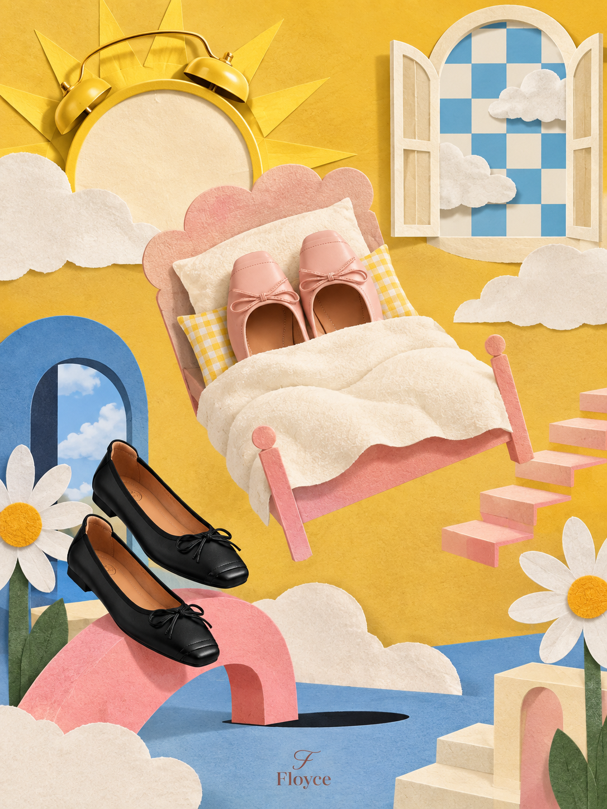
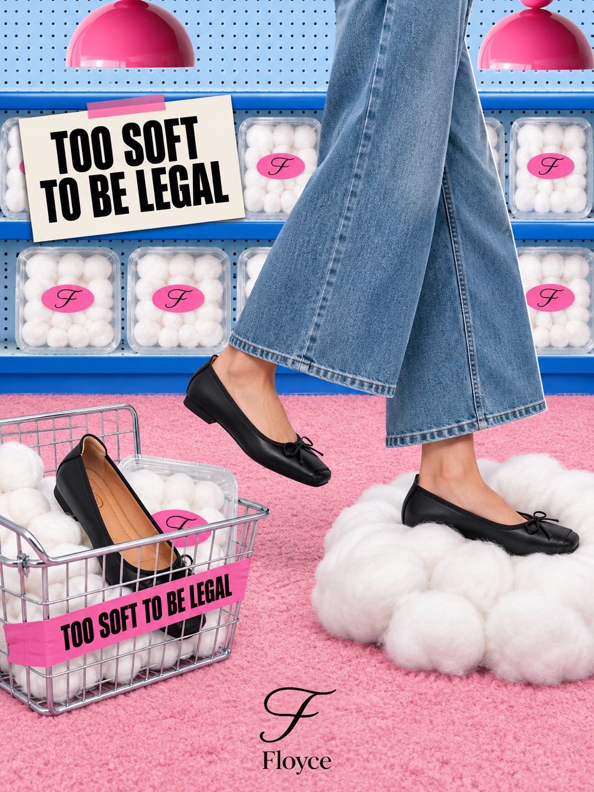
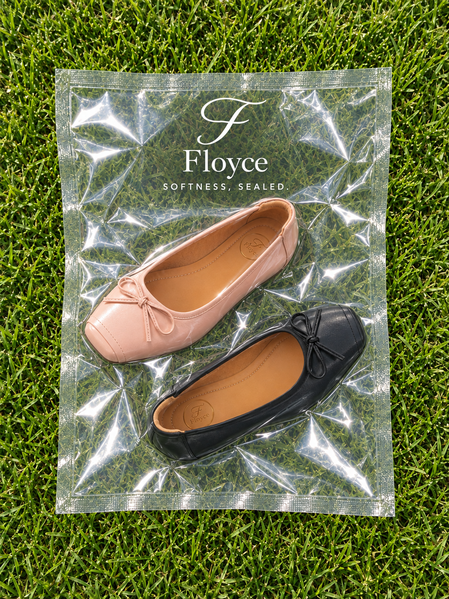
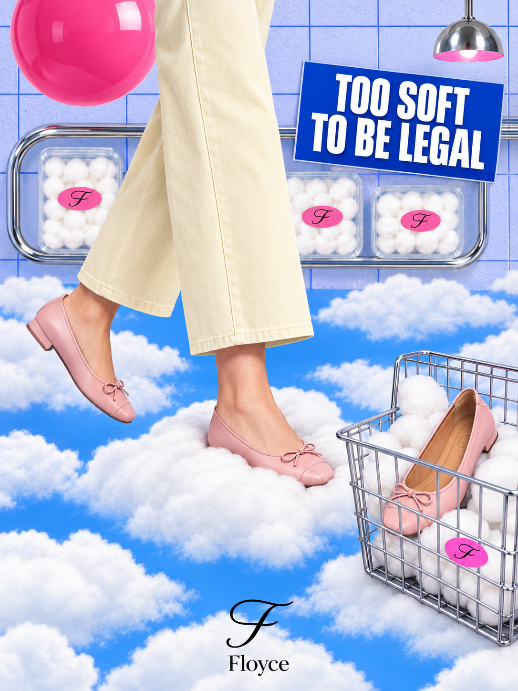

FLOYCE
Art Direction · Campaign Design · Content Creation
Project Overview
FLOYCE is a campaign for a women’s footwear brand. I developed the creative concept, art direction, photography, video, editing, motion graphics, and social assets. The final series uses playful product compositions while maintaining a consistent brand identity.
02 / Applications
Campaign applications



